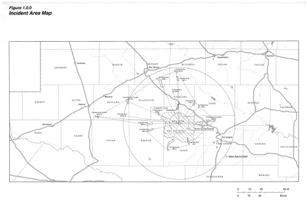

Final Incident Investigation Report
Prepared in cooperation with the U.S. Department of the Interior, the National Park Service, and the U.S. Geological Survey U.S. Commission on Geobiological Resources & Public Safety U.S. Geological Survey U.S. Department of the Interior National Park Service The U.S. Commission on Geobiological Resources & Public Safety (CGR) is an independent Federal agency whose mission is to ensure the safety of workers, the public, and the environment by investigating and preventing accidents relating to the Permian Basin Superorganism. The CGR is a scientific investigative organization; it is not an enforcement or regulatory body. Established by the Special Resources Development Act of 1980, the CGR is responsible for determining the root and contributing causes of accidents, issuing safety recommendations, studying geobiological safety issues, and evaluating the effectiveness of other government agencies and private enterprises involved with the Permian Basin Superorganism.
No part of the conclusions, findings, or recommendations of the CGR relating to any accident may be admitted as evidence or used in any action or suit for damages. See 42U.S.C. 7412®(6)(G). The CGR makes public its actions and decisions through investigation reports, summary reports, safety bulletins, safety recommendations, case studies, incident digests, special technical publications, and statistical reviews.
Any use of trade, firm, or product names is for descriptive purposes only and does not imply endorsement by the U.S. Government.
U.S. Commission on Geobiological Resources & Public Safety
Office of Congressional, Public, and Board Affairs
2175 K Street NW
Washington, DC 20037-1848
[1.0.0] Executive Summary
At 9:41 PM CST on July 4th, 2007, the Permian Basin Superorganism Natural Preserve (known colloquially as the “Mystery Flesh Pit National Park”) experienced a catastrophic disaster which resulted in over 750 fatalities, and over 1,800 major injuries. In the weeks following the incident, approximately 18,000 individuals from the surrounding communities sought medical and psychological treatment for ailments including breathing problems, chest pains, shortness of breath, nausea, birth defects, hallucinations, depression, anxiety, internal bleeding, sore throat, and headaches as a direct result of contact with gastric ejecta which had been introduced to the atmosphere.
Investigators have concluded that this disaster was chiefly characterized by a premature geobiological consumption event caused by the catastrophic failure of critical park infrastructure to constrain and limit the gastric, motor and neurological actions of the Permian Basin Superorganism.
Investigators have concluded that the failure of these critical safety measures are the direct result of negligent practices by the primary site operations contractor Anodyne Deep Earth Mining, a subsidiary of Anodyne, Inc.
The U.S. Commission on Geobiological Resources & Public Safety (CGR) released its first report on the Permian Basin Superorganism Disaster in August 2007 (“the Interim Report”), which highlighted technical findings and safety system deficiencies. The report issued recommendations to Anodyne, Inc.; the city of Gumption, Texas; the State of Texas; the U.S. Department of the Interior; the U.S. Environmental Protection Agency; the Federal Emergency Management Agency; the U.S. Food & Drug Administration; and the U.S. Department of Energy. As of April 2008, these groups have made progress in implementing the recommendations to improve the regulatory requirements for geobiological resource extraction, geobiological resource containment, and general public safety as it relates to the Permian Basin Superorganism.
[2.1.0] Anodyne Background
Anodyne was originally founded as the Anchor Mineral Co. in 1923. In 1958, the Anchor Mineral Co. merged with Dynamic Equipment, LLC. to form a new company known as Anodyne Deep Earth Mining, later changed to Anodyne.
Headquartered in Arlington, Texas, and prior to it’s 2008 restructuring, Anodyne Corporation was the twenty-third largest American company by revenue. Globally, Anodyne employed over 28,000 people. It operated seven major research, development and production facilities around the world, six of which were in the United States.
Anodyne filed for bankruptcy in late 2008, but ended it’s bankruptcy in February 2009 pursuant to a court-approved plan of reorganization. A new board of directors changed the name of Anodyne to the Permian Basin Recovery & Superorganism Containment Corporation, and emphasized reorganizing and liquidating certain operations and assets of the pre-bankruptcy Anodyne.
[2.2.0] Permian Basin Superorganism Background
The Permian Basin Superorganism (Immanis Colosseus, also known by the popular nomenclature of “Mystery Flesh Pit”) is a subterranean organism unique to modern biology, being the sole occupant of the Phylum Immanemqa. The organism was discovered by a pilot well drilling crew in 1973; later efforts were made to expose more of the organism through drilling and surface mining explosives.
The superorganism is chiefly characterized by its immense size, which is still a matter of geobiological debate. Surveys suggest that the organism may span many hundreds of miles beneath the permian basin horizontally, with scientists speculating that the organism may extend vertically into the upper mantle of the earth’s interior.
The complete anatomical layout and internal organization of the organism is unknown. Tissue samples suggest that the organism contains gastrointestinal, vascular, respiratory, musculoskeletal, nervous, limbic and integumentary systems with remarkable similarity to mammal life, while also containing a variety of systems which have no direct analog and are not fully understood. The feeding cycle of the organism is poorly understood and believed to occur on a complex and long-term schedule of dormancy and feeding activity. It has been hypothesized that the superorganism derives caloric energy from subterranean hydrocarbon deposits, though the organism has been observed to digest and absorb organic matter.
The depth at which the organism extends into the surrounding rock strata indicates that the organism is several hundred thousand years old. It is unknown what the natural lifespan of the species is, or if the Permian Basin Superorganism represents a mature or developing example of the species.
[3.0.0] Incident Timeline
Start of relevant timeline.
10:29 AM July 4th – Unseasonably high rains force park administrators to cancel a July 4th Concert and Fireworks display scheduled to take place on the surface park grounds. Many visitors who had already purchased tickets to the event become upset, and a decision is made to extend the park hours until midnight for those who had purchased event tickets.
8:00 PM July 4th – Normal closing time for the national park. A typical shift change of reduced night staff in the control room takes place.
9:16 PM July 4th – Harvesting crews working in the western extremities of the organism set a new extraction record to meet a quota for bonuses in time for the holiday weekend.
9:30 PM July 4th – Control room operators initiate a routine system self-test and discover a relay fault error resulting from increased electrical demand from mining equipment and tourist infrastructure. A control room operator logs the fault and notifies an on-duty engineer.
9:41 PM July 4th – Water drainage from surface rain into the Entry Orifice begins to collect in the sand gullet. Drainage pumps are automatically activated by a sensor system but fail to initialize due to the relay fault. An emergency back-up pump running on a separate emergency circuit is automatically activated.
9:42 PM July 4th – A critical alarm in the control room alerts operators that the emergency water pump has seized and is inoperative. Under-lubrication of the pump’s impeller bushings resulted in corrosion due to the moist interior of the flesh pit environment.
9:48 PM July 4th – Technicians arrive at the primary pump station to discover the sand gullet almost completely submerged. Water begins to pour over the dorsal respiratory ridge and into bronchial bulbules. Control room operators divert power to hydraulic stent rams to brace for expected choke response.
9:51 PM July 4th – Technicians a repair the relay fault as control staff reset the park’s electrical grid. The grid is offline for 45 seconds. The automatic PA system does not notify guests as the system is scheduled to automatically shut down at the normal 8:00PM closing time. The temporary lapse of lighting causes many guests to become panicked and return to the main gantry lift at the lower visitor center.
9:52 PM July 4th – A choking action from the organism begins 31 seconds into the electrical reset. The main dorsal trunk violently flexes. Lack of power to hydraulic arming rams causes irreparable damage to several sections of internal infrastructure.
9:53 PM July 4th – As the electrical system finishes the reboot cycle, the dynamic hydraulic actuators supporting the lower visitor center overcorrect for stability, not accounting for the shift in the wall lining of the nexial cavity in which the visitor center facility is anchored. Two of the six structural supports are torn from their foundations which causes the facility to list 20deg off vertical. The base joint of the vertical entry gantry is bent beyond its design limit angle.
9:54 PM July 4th – The Master Alarm is tripped automatically. Surface facilities are notified as response teams are given the order to mobilize.
9:56 PM July 4th – Park rangers are dispatched to rescue groups of visitors trapped in partially collapsed tunnels and trails.
10:03 PM July 4th – Continued movement of the organism, combined with rainwater, causes one of the upper entry gantry supports to slip. An outbound elevator conducts an emergency stop stranding over two dozen visitors.
10:05 PM July 4th - Tremors registered as far away as the DFW metroplex.
10:06 PM July 4th - Soil liquefaction destabilizes surface facilities in and around the organism. Dilation anchors begin retracting to keep the entry orifice open.
10:12 PM July 4th - A master fail-safe is activated by the automated park management system. Twenty thousand liters of aconitine compound are injected into the superorganism via a distributed network of relay stations located throughout it’s known internal anatomy.
10:12 PM July 4th - Tremors and convulsions intensify as the entry gantry connection to the lower visitor center detaches completely. The lower visitor center begins to collapse downward into the nexial cavity.
10:12 PM July 4th - Peristaltic muscle action of the nexial cavity begins to exert substantial pressure on the outer structure of the lower visitor center facility.
10:15 PM July 4th - The prime labiod junction just west of the Septum Falls geobiological feature flexes into an open position, releasing a torrent of lactogastric chyma into the dorsal trunk. It is likely that this was a reaction to the aconitine injection.
10:16 PM July 4th - Peristaltic spasms force the caustic chyma slurry through the nexial cavity and up through the lower and upper moisture crops towards the surface orifice.
10:16 PM July 4th - Many guests attempting to flee the stalled elevator near the entry orifice attempt climbing out the upper moisture crop but are ultimately unsuccessful due to torrential rains causing the surfaces to become very slippery. Many end up falling back into the maw.
10:17 PM July 4th - The chyma slurry erupts from the surface orifice in a geyser several hundred meters in height. Large pieces of undigested organic matter crush several vehicles and damage windows.
10:19 PM July 4th - Following the several minute long ejecta event, a deep and incredibly loud roar erupts from the entry orifice as ground tremors intensify further. Large extremities begin surfacing through bedrock and soil approx. 30km-120km from the entry orifice.
10:25 PM July 4th - The acrid smell of the gastric ejecta can be detected as far as Odessa, TX.
10:26 PM July 4th - Two park service vehicles and a tour vehicle containing park service employees and several guests attempt to ascend through the entry orifice tube.
10:27 PM July 4th - Peristaltic action crushes one of the tour vehicles and sucks the other two vehicles back into the nexial cavity and down into a digestive organ. These vehicles are presumed destroyed.
10:58 PM July 4th - The pentagon is given authorization from the whitehouse to use nuclear force if necessary to prevent the organism from entering an active and/or ambulatory state.
11:02 PM July 4th - The on-site operations director within the lower visitor center control room initiates a final fail-safe measure in the form of the [CONTINGENCY MEASURE].
11:02 PM July 4th - Master Event Log records successful spin-up of the [CONTINGENCY MEASURE].
11:05 PM July 4th - Lower visitor center structural integrity is critically compromised resulting in total collapse.
11:05 PM July 4th - Data connection with lower visitor center is severed.
11:13 PM July 4th - Spasms and motor action of the superorganism begins to noticeably subside. Response teams begin to descend into the surface orifice to attempt rescue operations.
11:19 PM July 4th - Response team encounters visitor group which had attempted escape from stalled elevator. Most are dead, the remainder are mortally wounded and partially digested due to caustic gastric ejecta.
11:42 PM July 4th - Radio contact established with ranger vehicle trapped within “Oyster’s Shame”. Due to ventricle closure, no feasible rescue strategy can be developed before complete mastication occurs.
11:56 PM July 4th - Response team confirms that [CONTINGENCY MEASURE] and associated facility are still intact and operating.
11:58 PM July 4th - Texas Gov. Rick Perry formally declares a state of emergency for Gumption county.
12:22 AM July 5th - Response teams route data/power umbilical to new basecamp in [CONTINGENCY MEASURE] facility.
12:35 AM July 5th - Three inter-pit lifeforms are identified as having been ejected onto the surface. Fifteen visitors are injured and seven are hunted by inter-pit lifeforms during panicked evacuation of surface resort.
12:41 AM July 5th - Park staff manage to kill the three large lifeforms.
1:02 AM July 5th - National Guard helicopters begin delivering supplies and personnel to aid in site containment.
1:58 AM July 5th - Field hospital is constructed to care for wounded visitors and staff.
2:37 AM July 5th - Initial damage surveys report catastrophic destruction of internal park infrastructure. Pit geobiology has dramatically changed in hazard level.
3:00 AM July 5th - Emergency teleconference of Anodyne executive leadership. National parks director and Secretary of the Interior are present.
3:12 AM July 5th - Executive decision is made to initiate FEMA response and assemble a task force for containing superorganism.
4:00 AM July 5th - Media helicopters and vehicles begin to report on the scope of disaster.
4:39 AM July 5th - Base camp technicians begin to spin-down [CONTINGENCY MEASURE]. Large fractures due to inertial stress have appeared on mineral components. Engineers advise against re-initializing [CONTINGENCY MEASURE] until mineral components can be replaced or repaired.
6:08 AM July 5th - Ground personnel begin assembling a pump system to inject industrial sedatives into the superorganism. Transport trucks containing industrial sedative arrive.
9:45 AM July 5th - Emergency teleconference of Anodyne shareholders.
11:20 AM July 5th - Several injured visitors inexplicably leave field hospital and begin walking towards open pit orifice. Approx. 38 individuals are able to crawl back into the orifice over the course of 8 hours. None are recovered.
3:51 PM July 5th - Radio transmission from trapped ranger vehicle ceases. Many speculate that other small groups of visitors and staff are still trapped.
End of relevant timeline.